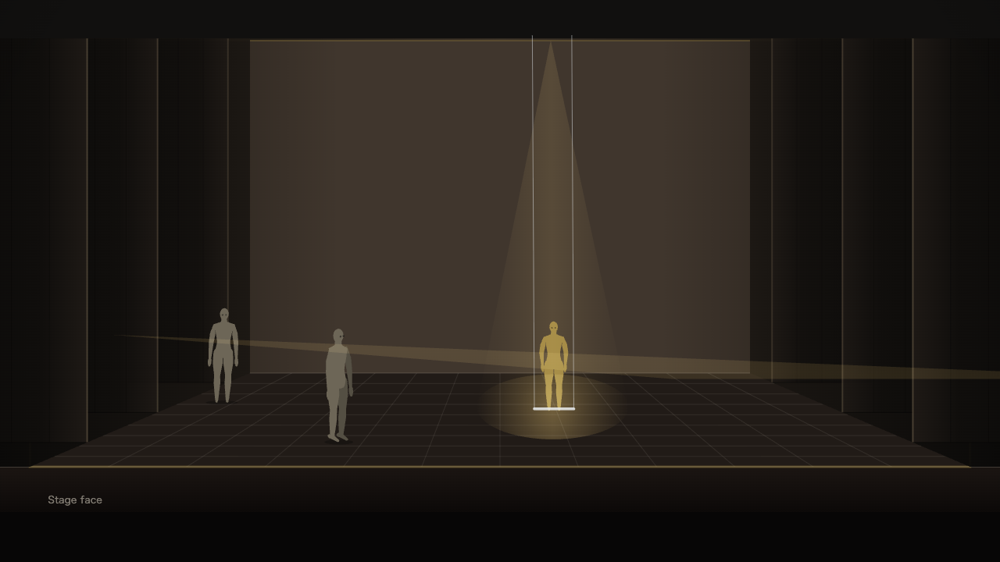
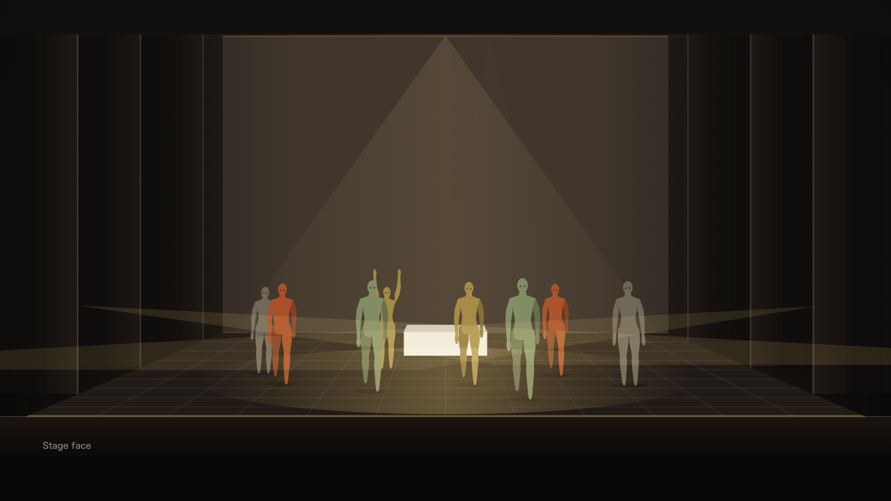
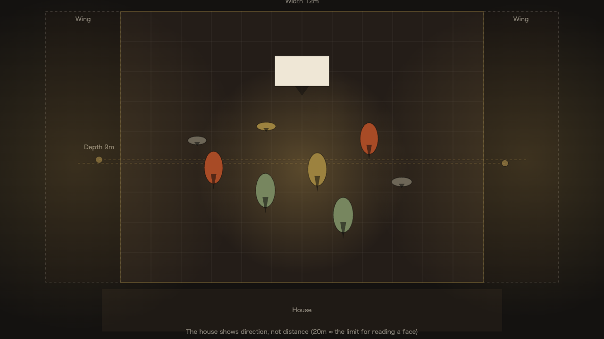
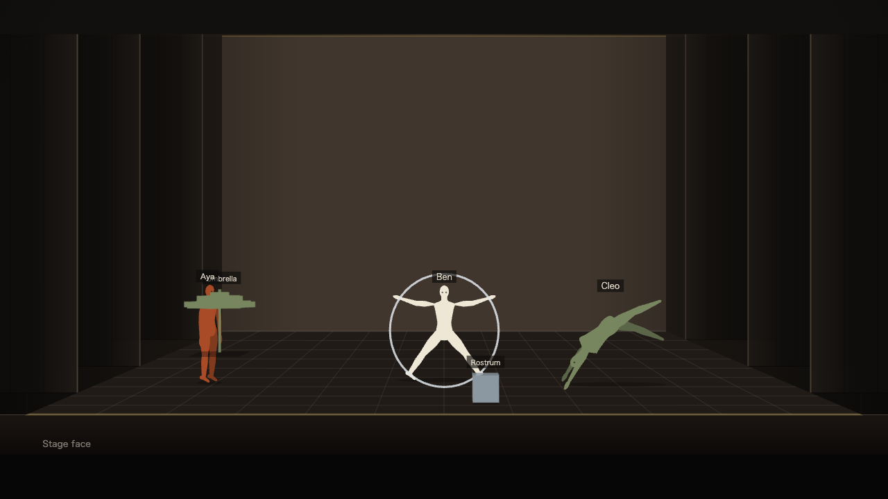
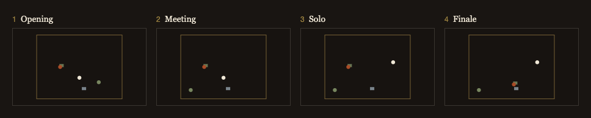

STAGE SKETCH — β
Stage Sketch
Quick Guide — the first 90 seconds
For everyone trying the beta
SCENE 01
What it is
Front and plan, always in sync.
One stage seen two ways — move it in one view and it moves in the other.


SCENE 02
Contents
ON STAGE
What you can draw.
Performers and props alike — name them, then place them freely.

- PlaceCast, props and set pieces — position and facing
- Pose30 of them — side flip, Cyr wheel, unicycle
- LightsOverhead, side, front and floor
- MachineryRevolve, lift, curtains, waterPC only
SCENE 03
Scenes
SCENES
Line scenes up into a show.
Build one scene at a time, name it, reorder it. The order of the scenes is the show.

SCENE 04
Together
SHARED SESSION
Watch the same screen together.
Open the invite link and the host’s scene appears on your screen. Point at things with the laser pointer and arrows.
Talk over Zoom alongside it. The host drives the scenes; your job is to point.
リアルタイム共有 Live sharing
セッションを開始 コピーSCENE 05
Saving
BACKUP
Saved on this device only.
Nothing goes to a cloud. So whenever you reach a good stopping point, press Export and keep a copy. That is the only thing we ask.
Clearing your browser data clears this too. With an exported file you can always come back.
SCENE 06
Help
SUPPORT
Three places to look.
Now — curtain up.